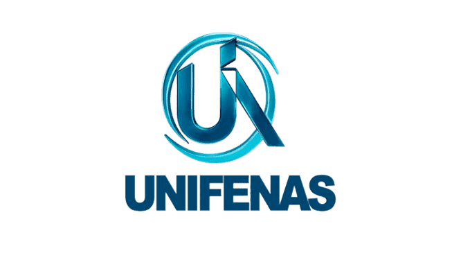

Por um Futuro Sustentável: O Impacto e o Destino do Lixo Eletrônico
Descubra como descartar corretamente o lixo eletrônico, um problema crescente que coloca o Brasil como o
5º maior gerador mundial. Aprenda sobre a importância da coleta seletiva e práticas sustentáveis para um
consumo consciente de eletrônicos
Lixo Eletrônico: Entenda os Riscos e Saiba Como Descartar Corretamente
A tecnologia faz parte da nossa atualidade, mantendo-nos sempre conectados, com celulares,
computadores, fones de ouvido, carregadores… Mas você já parou pra pensar no que acontece com esses
eletrônicos quando deixam de funcionar ou são trocados por modelos novos? O que muita gente ainda não sabe
é que esse “lixo eletrônico” pode causar sérios problemas para o meio ambiente e para a nossa saúde,
principalmente quando é descartado de maneira errada. Pilhas, baterias, cabos e outros aparelhos contêm
substâncias tóxicas que, se jogadas no lixo comum, contaminam o solo, a água e até o ar que respiramos.
Esse site foi desenvolvido com o propósito de informar, conscientizar e ajudar a população entender a
forma adequada de fazer o descarte desses resíduos. Aqui vamos aprender juntos e mostrar que pequenas
atitudes fazem uma grande diferença quando o assunto é cuidar do nosso planeta.
O que é lixo eletrônico?
O chamado lixo eletrônico — também conhecido como e-lixo ou resíduos de equipamentos eletroeletrônicos
(REEE) — é todo dispositivo que funciona com eletricidade (ou bateria) e que foi descartado. Isso inclui:
Celulares antigos;
Computadores e notebooks;
Impressoras;
Carregadores e cabos;
Fones de ouvido;
Pilhas e baterias;
TVs, micro-ondas e eletrodomésticos em geral.
Quais os riscos do descarte incorreto?
Muitos desses produtos contêm metais pesados e substâncias tóxicas, como:
Chumbo;
Mercúrio;
Cádmio;
Arsênio, dentre outros.
Quando jogados no lixo comum ou em terrenos inapropriados, esses materiais contaminam o solo e os lençóis
freáticos, além de liberarem gases nocivos no ar. Isso causa danos graves à natureza e à saúde humana,
podendo provocar doenças respiratórias, problemas neurológicos e até câncer com o tempo.
Qual a importância da reciclagem?
A reciclagem é um dos pilares mais importantes para a construção de um futuro sustentável. Quando falamos de
lixo eletrônico, esse processo se torna ainda mais essencial, pois esses resíduos contêm componentes que
podem causar sérios danos ao meio ambiente e à saúde humana. Reciclar equipamentos eletrônicos não significa
apenas livrar-se de algo que não usamos mais. É uma forma de reduzir a poluição, evitar o desperdício de
recursos naturais e proteger o planeta. Muitos desses aparelhos possuem metais preciosos como ouro, prata,
cobre e alumínio, que podem ser reaproveitados em novos produtos. Assim, evitamos a extração desnecessária
da natureza, economizamos energia e diminuímos a emissão de gases poluentes. Além disso, a reciclagem do
lixo eletrônico contribui para o desenvolvimento econômico e social. Ao separar e processar esses materiais
corretamente, novas oportunidades de trabalho são geradas nas áreas de coleta, triagem, desmontagem e
reaproveitamento. É um ciclo positivo que transforma problemas em soluções. Portanto, ao reciclar, estamos
fazendo muito mais do que descartar corretamente: estamos cuidando do nosso planeta, das futuras gerações e
mostrando que é possível viver em equilíbrio com a tecnologia e o meio ambiente. Reciclar é um ato de
responsabilidade. E cada atitude conta.
Nos nossos tópicos marcados no cabeçalho ou apenas descendo a página, te mostramos diversos modos para facilitar o descarte sem a necessidade de estragar o mundo em que vivemos, confira todo nosso conteúdo.
Nos nossos tópicos marcados no cabeçalho ou apenas descendo a página, te mostramos diversos modos para facilitar o descarte sem a necessidade de estragar o mundo em que vivemos, confira todo nosso conteúdo.
Ecopontos
Os ecopontos foram criados por meio de uma parceria entre a Prefeitura de Alfenas, a Universidade
Federal de Alfenas (Unifal) e o Instituto Viva Vida. Essa iniciativa tem como objetivo oferecer à população
um local adequado para o descarte correto de resíduos recicláveis, contribuindo para a preservação do meio
ambiente e a promoção da sustentabilidade na cidade. A colaboração entre o poder público, a universidade e a
sociedade civil reforça a importância da união de esforços em prol de um futuro mais limpo e
consciente.
Confira agora os Ecopontos na cidade de Alfenas:
Ponto de coleta 1 - Prefeitura de Alfenas
Ponto de coleta 2 - Unifal Sede
Ponto de coleta 3 - Unifal Santa Clara
Legislação Vigente
Para que o Brasil avance em direção a um futuro mais sustentável, leis e normas ambientais foram criadas
para orientar e controlar a forma como lidamos com os resíduos sólidos — especialmente os eletrônicos, que
contêm substâncias tóxicas e de difícil decomposição. Duas das principais diretrizes legais sobre esse tema
são:
A Política Nacional de Resíduos Sólidos (Lei nº 12.305/2010) é uma lei importante no Brasil que trata do cuidado com o lixo. Ela define regras para reduzir, reutilizar, reciclar e dar o destino certo aos resíduos, de forma a proteger o meio ambiente e a saúde da população. Um dos pontos principais dessa lei é a responsabilidade compartilhada, ou seja, todos — governo, empresas e cidadãos — têm um papel na forma como o lixo é tratado.
Já a Resolução CONAMA nº 401/2008 complementa essa política ao definir regras específicas para o descarte de pilhas e baterias, que contêm substâncias perigosas. Essa resolução exige que esses materiais sejam coletados de forma separada e enviados para tratamento adequado, evitando a contaminação do solo e da água.
Essas leis existem para garantir que o desenvolvimento tecnológico ande lado a lado com a preservação ambiental. Conhecê-las e cumpri-las é um passo essencial para quem se importa com o futuro do planeta.
Juntas, essas normas ajudam a construir um sistema mais sustentável e seguro para o descarte de resíduos, especialmente os que podem causar grandes impactos ao meio ambiente.
A Política Nacional de Resíduos Sólidos (Lei nº 12.305/2010) é uma lei importante no Brasil que trata do cuidado com o lixo. Ela define regras para reduzir, reutilizar, reciclar e dar o destino certo aos resíduos, de forma a proteger o meio ambiente e a saúde da população. Um dos pontos principais dessa lei é a responsabilidade compartilhada, ou seja, todos — governo, empresas e cidadãos — têm um papel na forma como o lixo é tratado.
Já a Resolução CONAMA nº 401/2008 complementa essa política ao definir regras específicas para o descarte de pilhas e baterias, que contêm substâncias perigosas. Essa resolução exige que esses materiais sejam coletados de forma separada e enviados para tratamento adequado, evitando a contaminação do solo e da água.
Essas leis existem para garantir que o desenvolvimento tecnológico ande lado a lado com a preservação ambiental. Conhecê-las e cumpri-las é um passo essencial para quem se importa com o futuro do planeta.
Juntas, essas normas ajudam a construir um sistema mais sustentável e seguro para o descarte de resíduos, especialmente os que podem causar grandes impactos ao meio ambiente.
Impactos Ambientais
O descarte incorreto de lixo eletrônico representa um sério risco ao meio ambiente. Muitos dos
aparelhos eletrônicos que usamos no dia a dia — como celulares, baterias, notebooks e eletrodomésticos —
contêm substâncias tóxicas e metais pesados que, quando jogados no lixo comum ou em locais inadequados,
acabam causando impactos profundos e muitas vezes invisíveis à primeira vista.
Poluição do ar
A queima de lixo eletrônico em aterros sanitários ou incineradores libera poluentes
atmosféricos.
Em muitos lugares, o lixo eletrônico é queimado de forma irregular, tanto em aterros quanto em incineradores improvisados. Esse processo libera poluentes atmosféricos extremamente perigosos, como dioxinas e furanos, que afetam a qualidade do ar e colocam em risco a saúde das populações próximas.
Em muitos lugares, o lixo eletrônico é queimado de forma irregular, tanto em aterros quanto em incineradores improvisados. Esse processo libera poluentes atmosféricos extremamente perigosos, como dioxinas e furanos, que afetam a qualidade do ar e colocam em risco a saúde das populações próximas.
Gases de efeito estufa
A decomposição do lixo urbano emite gás metano, que contribui para o aquecimento global.
Além dos resíduos sólidos, a decomposição de lixo orgânico e eletrônico em aterros sanitários libera gás metano (CH₄), um dos principais gases de efeito estufa. Ele é até 25 vezes mais potente que o dióxido de carbono (CO₂) no aquecimento global, contribuindo diretamente para as mudanças climáticas.
Além dos resíduos sólidos, a decomposição de lixo orgânico e eletrônico em aterros sanitários libera gás metano (CH₄), um dos principais gases de efeito estufa. Ele é até 25 vezes mais potente que o dióxido de carbono (CO₂) no aquecimento global, contribuindo diretamente para as mudanças climáticas.
Destruição de habitats
A produção de eletrônicos requer a extração de recursos naturais, como minerais raros, o que pode
destruir habitats naturais.
A fabricação de eletrônicos exige a extração de minerais raros, como lítio, cobalto e coltan, geralmente obtidos por meio de mineração em áreas de floresta ou regiões remotas. Essa extração pode provocar a devastação de ecossistemas inteiros, afetando espécies animais e vegetais, e colocando em risco a biodiversidade.
A fabricação de eletrônicos exige a extração de minerais raros, como lítio, cobalto e coltan, geralmente obtidos por meio de mineração em áreas de floresta ou regiões remotas. Essa extração pode provocar a devastação de ecossistemas inteiros, afetando espécies animais e vegetais, e colocando em risco a biodiversidade.

Riscos à saúde humana e animal
A exposição a substâncias tóxicas presentes no lixo eletrônico pode causar doenças.
O contato direto ou indireto com os materiais tóxicos presentes no lixo eletrônico pode causar sérios
problemas de saúde. Em seres humanos, a exposição prolongada pode resultar em doenças respiratórias,
distúrbios neurológicos, problemas renais e até câncer. Já para os animais, a contaminação do solo e da
água pode envenenar espécies, afetar a cadeia alimentar e levar à morte de diversas formas de
vida.Eletrônicos contêm materiais como chumbo, mercúrio, cádmio, berílio, níquel e retardantes de chama
bromados. Esses elementos são utilizados para melhorar o desempenho dos aparelhos, mas, quando expostos ao
meio ambiente ou manipulados sem os devidos cuidados, tornam-se extremamente nocivos.
Ao compreender os impactos ambientais do lixo eletrônico, percebemos que a responsabilidade pelo destino desses resíduos é de todos nós — cidadãos, empresas e governos. Adotar práticas sustentáveis, como o descarte em pontos de coleta específicos, a reciclagem e a redução do consumo, é fundamental para preservar a natureza e garantir um futuro mais saudável para todos.
Ao compreender os impactos ambientais do lixo eletrônico, percebemos que a responsabilidade pelo destino desses resíduos é de todos nós — cidadãos, empresas e governos. Adotar práticas sustentáveis, como o descarte em pontos de coleta específicos, a reciclagem e a redução do consumo, é fundamental para preservar a natureza e garantir um futuro mais saudável para todos.
Sobre nós

Nós somos um grupo de alunos do primeiro período do curso de Ciência da Computação da Unifenas e
desenvolvemos esse projeto para ajudar a comunidade da cidade de Alfenas a conhecer mais sobre os
malefícios do descarte irregular do lixo eletrônico e conscientizar a população dos locais corretos para
exercer esse bem para a cidade e para o meio ambiente.